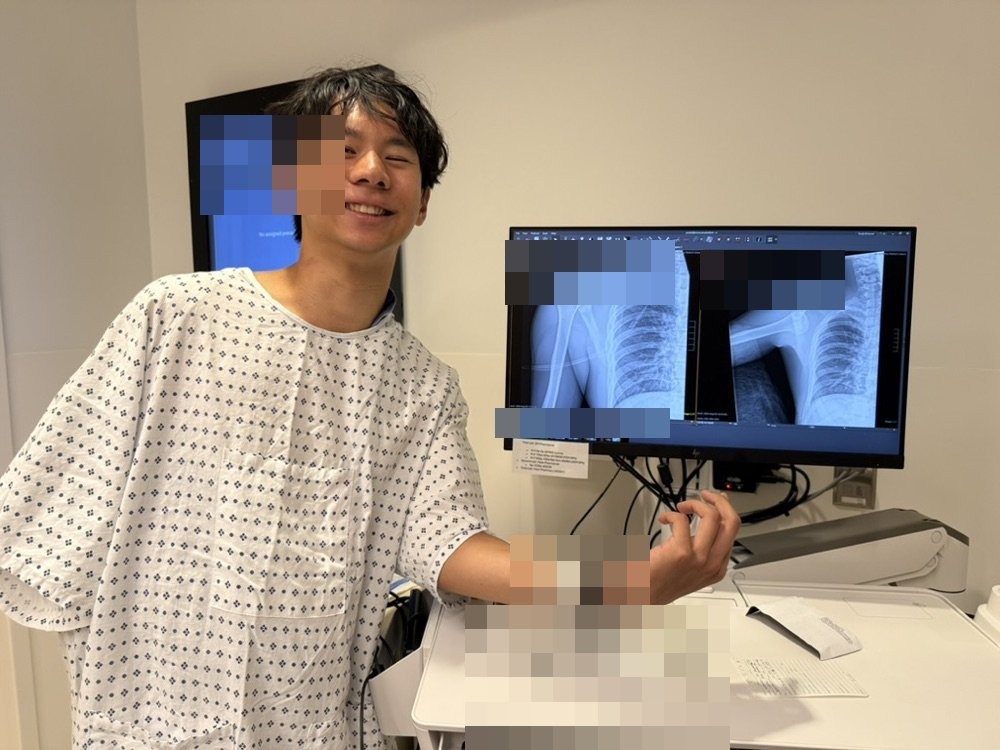

the pickleball incident
aug 2, 2026 · in which a casual sunday goes to the emergency department
lunged for a drop shot, landed wrong, and my right shoulder decided to leave its socket — a full anterior dislocation, reduced at the ER that evening. the MRI ten days later found the classic pair: a bankart tear (the cartilage rim of the socket, peeled off where the ball levered out) and a hill-sachs lesion (a dent in the back of the humeral head from the same argument), with the bone itself intact. it could have been worse. it also could have been avoided by not playing pickleball.

morale: high. shoulder: recently reinstalled. the x-rays on the monitor agreed to pose for the photo.
the actual MRI
this is the real scan — every slice of it, converted straight from the DICOM files. pick a series, then scroll (or drag the slider) to move through the shoulder the way a radiologist does. the notes on the right tell you what each series is for and where the damage lives.
scroll on the image (or ↑↓ with it focused) for slices · on a phone, swipe it sideways · drag to pan when zoomed · 1–7 series · r reset
for the curious, not for diagnosis — the radiologist gets the last word. shoulder currently in rehab; the comeback is scheduled.